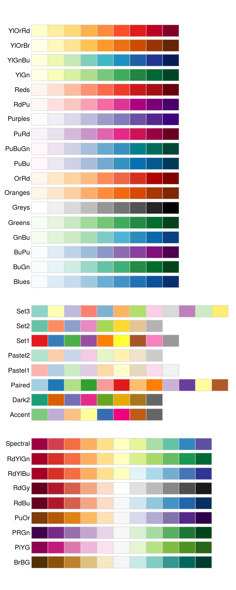

Ch. 5 Scales and Zooming
5.1 Scales
The third way you can make your plot better for communication is to adjust the scales. Scales control the mapping from data values to things that you can perceive. Normally, plotnine automatically adds scales for you. For example, when you type:
ggplot(mpg, aes("displ", "hwy")) +\
geom_point(aes(colour="class"))plotnine automatically adds default scales behind the scenes:
ggplot(mpg, aes("displ", "hwy")) +\
geom_point(aes(colour="class")) +\
scale_x_continuous() +\
scale_y_continuous() +\
scale_colour_discrete()Note the naming scheme for scales: scale_ followed by the name of the aesthetic, then _, then the name of the scale. The default scales are named according to the type of variable they align with: continuous, discrete, datetime, or date. There are lots of non-default scales which you’ll learn about below.
The default scales have been carefully chosen to do a good job for a wide range of inputs. Nevertheless, you might want to override the defaults for two reasons:
You might want to tweak some of the parameters of the default scale. This allows you to do things like change the breaks on the axes, or the key labels on the legend.
You might want to replace the scale altogether, and use a completely different algorithm. Often you can do better than the default because you know more about the data.
5.1.1 Axis ticks and legend keys
There are two primary arguments that affect the appearance of the ticks on the axes and the keys on the legend: breaks and labels. Breaks controls the position of the ticks, or the values associated with the keys. Labels controls the text label associated with each tick/key. The most common use of breaks is to override the default choice:
ggplot(mpg, aes("displ", "hwy")) +\
geom_point() +\
scale_y_continuous(breaks=range(15, 45, 5))You can use labels in the same way (a list of strings the same length as breaks), but you can also suppress the labels altogether by passing a list of empty strings. This is useful for maps, or for publishing plots where you can’t share the absolute numbers. Note that the list of labels needs to be of the same length as the list of values, so a helper function like no_labels is convenient8:
def no_labels(values):
return [""] * len(values)
ggplot(mpg, aes("displ", "hwy")) +\
geom_point() +\
scale_x_continuous(labels=no_labels) +\
scale_y_continuous(labels=no_labels)You can also use breaks and labels to control the appearance of legends. Collectively axes and legends are called guides. Axes are used for x and y aesthetics; legends are used for everything else.
Another use of breaks is when you have relatively few data points and want to highlight exactly where the observations occur. For example, take this plot that shows when each US president started and ended their term.
presidential["id"] = 34 + presidential.index
ggplot(presidential, aes("start", "id")) +\
geom_point() +\
geom_segment(aes(xend="end", yend="id")) +\
scale_x_date(name="", breaks=presidential.start, date_labels="'%y")Note that the specification of breaks and labels for date and datetime scales is a little different:
date_labelstakes a format specification, in the same form astime.strptime().date_breaks(not shown here), takes a string like “2 days” or “1 month.”
5.1.2 Legend layout
You will most often use breaks and labels to tweak the axes. While they both also work for legends, there are a few other techniques you are more likely to use.
To control the overall position of the legend, you need to use a theme() setting. We’ll come back to themes at the end of the chapter, but in brief, they control the non-data parts of the plot. The theme setting legend_position controls where the legend is drawn. Unfortunately, in order to position the legend correctly on the left or the bottom, we have to be a bit more explicit. Just using “left” and “bottom” may cause the legend to overlap the axis labels. Your milage may vary.
base = ggplot(mpg, aes("displ", "hwy")) +\
geom_point(aes(colour="class"))base + theme(legend_position="right") # the defaultbase + theme(subplots_adjust={'left': 0.2}) + theme(legend_position=(0, 0.5))base + theme(legend_position="top")base + theme(subplots_adjust={'bottom': 0.2}, legend_position=(.5, 0), legend_direction='horizontal')You can also use legend_position="none" to suppress the display of the legend altogether.
To control the display of individual legends, use guides() along with guide_legend() or guide_colourbar(). The following example shows two important settings: controlling the number of rows the legend uses with nrow, and overriding one of the aesthetics to make the points bigger. This is particularly useful if you have used a low alpha to display many points on a plot.
ggplot(mpg, aes("displ", "hwy")) +\
geom_point(aes(colour="class")) +\
geom_smooth(se=False) +\
theme(legend_position="bottom") +\
guides(colour=guide_legend(nrow=1, override_aes={"size": 4}))5.1.3 Replacing a scale
Instead of just tweaking the details a little, you can instead replace the scale altogether. There are two types of scales you’re mostly likely to want to switch out: continuous position scales and colour scales. Fortunately, the same principles apply to all the other aesthetics, so once you’ve mastered position and colour, you’ll be able to quickly pick up other scale replacements.
It’s very useful to plot transformations of your variable. For example, with the diamonds DataFrame, it’s easier to see the precise relationship between carat and price if we log transform them:
ggplot(diamonds, aes("carat", "price")) +\
geom_bin2d()ggplot(diamonds, aes("np.log10(carat)", "np.log10(price)")) +\
geom_bin2d()However, the disadvantage of this transformation is that the axes are now labelled with the transformed values, making it hard to interpret the plot. Instead of doing the transformation in the aesthetic mapping, we can instead do it with the scale. This is visually identical, except the axes are labelled on the original data scale.
ggplot(diamonds, aes("carat", "price")) +\
geom_bin2d() +\
scale_x_log10() +\
scale_y_log10()Another scale that is frequently customised is colour. The default categorical scale picks colours that are evenly spaced around the colour wheel. Useful alternatives are the ColorBrewer scales which have been hand tuned to work better for people with common types of colour blindness. The two plots below look similar, but there is enough difference in the shades of red and green that the dots on the right can be distinguished even by people with red-green colour blindness.
ggplot(mpg, aes("displ", "hwy")) +\
geom_point(aes(color="drv"))ggplot(mpg, aes("displ", "hwy")) +\
geom_point(aes(color="drv")) +\
scale_colour_brewer(type="qual", palette="Set1")Don’t forget simpler techniques. If there are just a few colours, you can add a redundant shape mapping. This will also help ensure your plot is interpretable in black and white.
ggplot(mpg, aes("displ", "hwy")) +\
geom_point(aes(color="drv", shape="drv")) +\
scale_colour_brewer(type="qual", palette="Set1")The ColorBrewer scales are documented online at http://colorbrewer2.org/ and made available in Python via the mizani package, by Hassan Kibirige. The figure below shows the complete list of all palettes. The sequential (top) and diverging (bottom) palettes are particularly useful if your categorical values are ordered, or have a “middle.” This often arises if you’ve used pd.cut() to make a continuous variable into a categorical variable.

When you have a predefined mapping between values and colours, use scale_colour_manual(). For example, if we map presidential party to colour, we want to use the standard mapping of red for Republicans and blue for Democrats:
presidential["id"] = 34 + presidential.index
ggplot(presidential, aes("start", "id", colour="party")) +\
geom_point() +\
geom_segment(aes(xend="end", yend="id")) +\
scale_colour_manual(values=["red", "blue"], limits=["Republican", "Democratic"])For continuous colour, you can use the built-in scale_colour_gradient() or scale_fill_gradient(). If you have a diverging scale, you can use scale_colour_gradient2(). That allows you to give, for example, positive and negative values different colours. That’s sometimes also useful if you want to distinguish points above or below the mean.
Note that all colour scales come in two variety: scale_colour_x() and scale_fill_x() for the colour and fill aesthetics respectively (the colour scales are available in both UK and US spellings).
5.1.4 Exercises
Why doesn’t the following code override the default scale?
python ggplot(df, aes("x", "y")) +\ geom_hex() +\ scale_colour_gradient(low="white", high="red") +\ coord_fixed()What is the first argument to every scale? How does it compare to
labs()?Change the display of the presidential terms by:
- Combining the two variants shown above.
- Improving the display of the y axis.
- Labelling each term with the name of the president.
- Adding informative plot labels.
- Placing breaks every 4 years (this is trickier than it seems!).
Use
override_aesto make the legend on the following plot easier to see.ggplot(diamonds, aes("carat", "price")) +\ geom_point(aes(colour="cut"), alpha=1/20)
5.2 Zooming
There are three ways to control the plot limits:
- Adjusting what data are plotted
- Setting the limits in each scale
- Setting
xlimandylimincoord_cartesian()
To zoom in on a region of the plot, it’s generally best to use coord_cartesian(). Compare the following two plots:
ggplot(mpg, aes("displ", "hwy")) +\
geom_point(aes(color="class")) +\
geom_smooth() +\
coord_cartesian(xlim=(5, 7), ylim=(10, 30))ggplot(mpg.query("5 <= displ <= 7 and 10 <= hwy <= 30"), aes("displ", "hwy")) +\
geom_point(aes(color="class")) +\
geom_smooth()You can also set the limits on individual scales. Reducing the limits is basically equivalent to subsetting the data. It is generally more useful if you want expand the limits, for example, to match scales across different plots. For example, if we extract two classes of cars and plot them separately, it’s difficult to compare the plots because all three scales (the x-axis, the y-axis, and the colour aesthetic) have different ranges.
mpg["drv"] = mpg["drv"].astype(str)
suv = mpg[mpg["class"] == "suv"]
compact = mpg[mpg["class"] == "compact"]
ggplot(suv, aes("displ", "hwy", colour="drv")) +\
geom_point()ggplot(compact, aes("displ", "hwy", colour="drv")) +\
geom_point()One way to overcome this problem is to share scales across multiple plots, training the scales with the limits of the full data.
x_scale = scale_x_continuous(limits=(mpg.displ.min(), mpg.displ.max()))
y_scale = scale_y_continuous(limits=(mpg.hwy.min(), mpg.hwy.max()))
col_scale = scale_colour_discrete(limits=mpg.drv.unique())
ggplot(suv, aes("displ", "hwy", colour="drv")) +\
geom_point() +\
x_scale +\
y_scale +\
col_scaleggplot(compact, aes("displ", "hwy", colour="drv")) +\
geom_point() +\
x_scale +\
y_scale +\
col_scaleIn this particular case, you could have simply used faceting, but this technique is useful more generally, if for instance, you want spread plots over multiple pages of a report.
In ggplot2 you can write
labels = NULLso you don’t need a helper function.↩︎